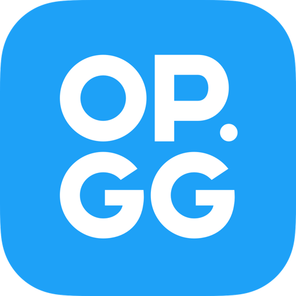
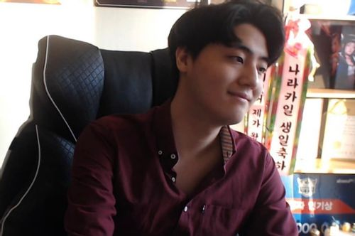
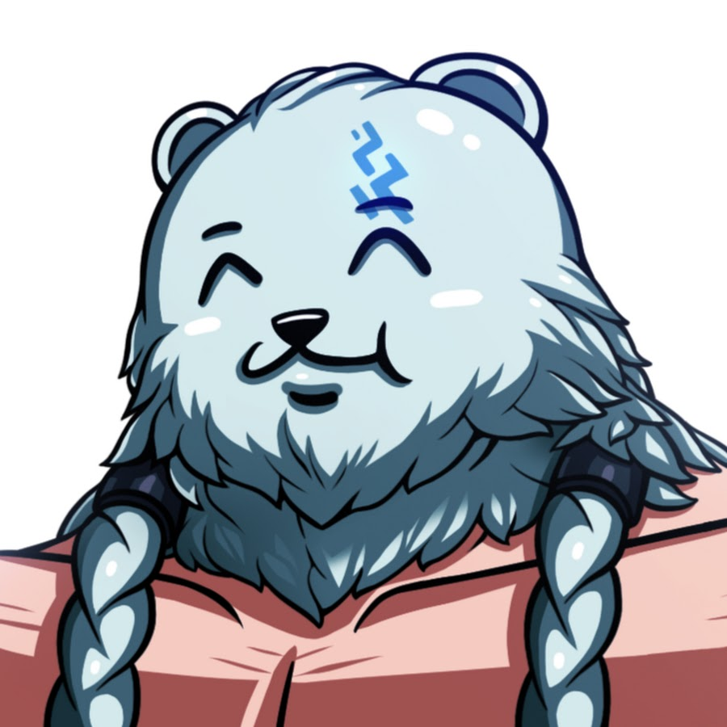

|  | - op.gg
- 상대방의 전적을 확인할 수 있는 사이트. 좋은 챔피언들과 챔피언에 맞는 룬, 아이템 등을 추천해준다. 설치하면 저절로 룬도 맞춰준다.
|
| - 롤박사 해도리
- 롤 패치 상황이나 새로운 정보등을 빠르게 알려주는 유튜브 채널.
|
| - 땅우양
- 원딜 장인. 전 프로게이머. 원딜 강의, 서포터 강의, 시청자 듀오 강의, 시청자가 진행한 게임을 관전하며 알려주는 관전 강의, 실시간 디스코드 방송을 보며 진행하는 뇌대리 강의 등이 있다.
|
|  | - 나라카일
- 대한민국의 前 리그 오브 레전드 프로게이머. 現 인터넷 방송인. 많은 챔피언을 다루는 정통 미드라이너이다.
|
|  | - ㅇyㅇ
- 볼리베어 원챔 장인으로서의 숙련도와 챔프 이해도가 높은 유튜버이다.그래서 계속 시즌에 맞는 메타을 연구한다.
|
 | - 무지개맛
- 듣도보도 못한 기상천외한 약을 파는 극한의 컨셉러 게임의 허점을 굉장히 잘 찌른다.
|